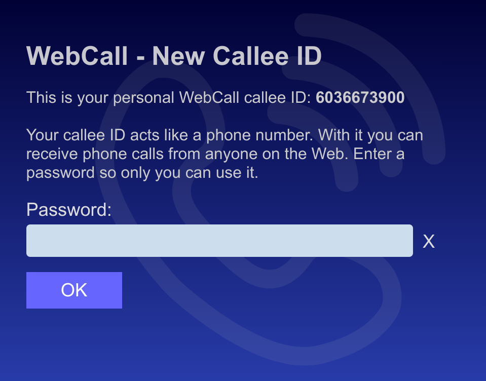
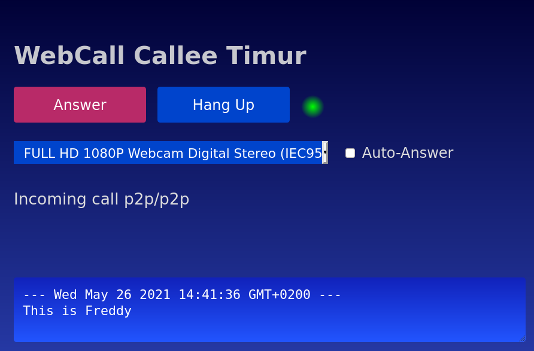
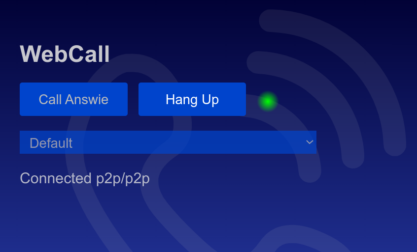

WebCall - Audiophile Web-Telephony
Soundcheck
First things first.
You have to hear the WebCall sound quality for yourself.
For this purpose we prepared two audio samples.
However, these audio samples will NOT be played back locally on your device.
Instead, a peer-to-peer telephony call will be initiated and the
audio samples will be played back on the other side.
This way you can hear what regular WebCall telephony sounds like.
Making and Receiving WebCalls
In order to make phone calls on the Web, you only need to click a link.
However, in order to receive calls, you need to have "a phone number."
The good news is that you can get a phone number very quickly.
You only need to enter a password in the box below:

When you enter a password you will get a personal callee link in return.
With this callee link you will be able to receive calls.
This is what a callee link looks like:
https://timur.mobi/callee/592510240
Everytime you login with your callee link and your password,
a second link will be shown on screen.
This is your WebCall user link.
You can share this link with anyone.
And anyone who has it will be able to call you.
This is what a user link looks like:
https://timur.mobi/user/592510240
While you are logged in, why not call yourself to verify everything is working correctly?
To do so just open your user link on a second device and click
the Call button.
The callee app on your first device should immediately start ringing.
This is what you will see when the call arrives:

After you picked up the call with the Answer button, this is what you will see on the caller side:

A list of devices that can be used with WebCall:
- Mac with Firefox, Chrome or Safari
- iPhone with Safari
- Android with Firefox, Fennec or Chrome
- Linux Desktop with Firefox or Chrome
- Windows Desktop with Edge, Chrome or Firefox
Learn more about End-to-end Encryption, Peer-to-Peer vs. Relayed Connections
and the Audio Encoding being used by following this link:
WebCall Core Information
New Featurs History
June 2021
New: One-Click Telephony for Websites
You can now add 1-click telephony buttons to your website and this way
allow your online visitors to give you direct phone calls.
The visitors will stay on your website during the whole call.
More...
May 2021
New: Offline Notifications for Callees
When you receive a call while you are not online, we can now notify you via social media.
If you enable this feature we will ask your caller to wait in line for a few minutes.

April 2021
New: Post-Call Statistics
When you finish a call you can now check how much data was sent
and the bitrate in both directions, as well as the number of
dropped packets, the roundtrip delay in milliseconds and the overall call duration.

New: WebCall Duo - Two-Party Quick Connect
When you finish a call you can now check how much data was sent
and the bitrate in both directions, as well as the number of
dropped packets, the roundtrip delay in milliseconds and the overall call duration.
WebCall Duo
March 2021
New: Digital Answering Machine functionality
HN: WebRTC 1.0 telephony app using “hifi” Opus codec with up to 500kbs bitrate